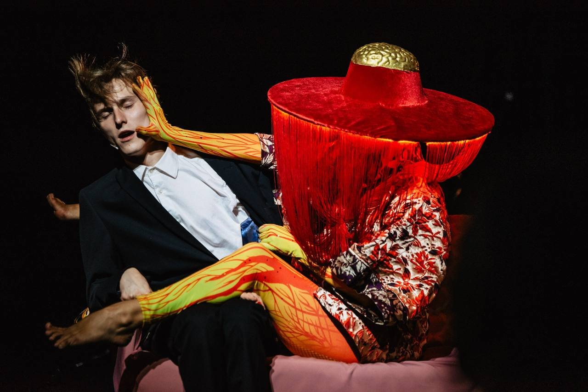
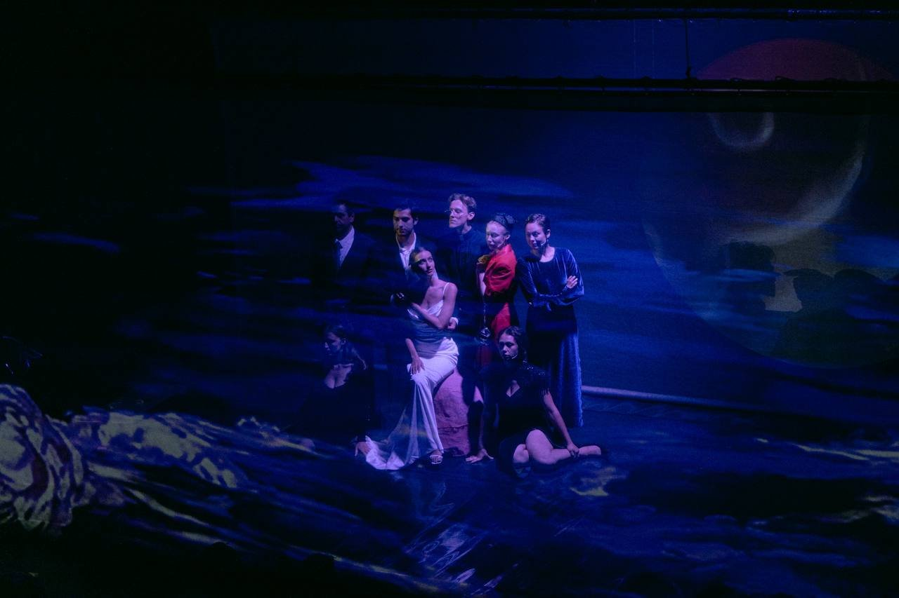
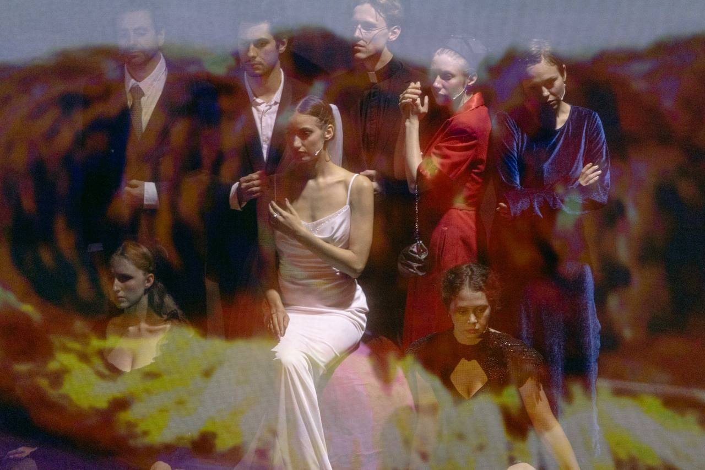
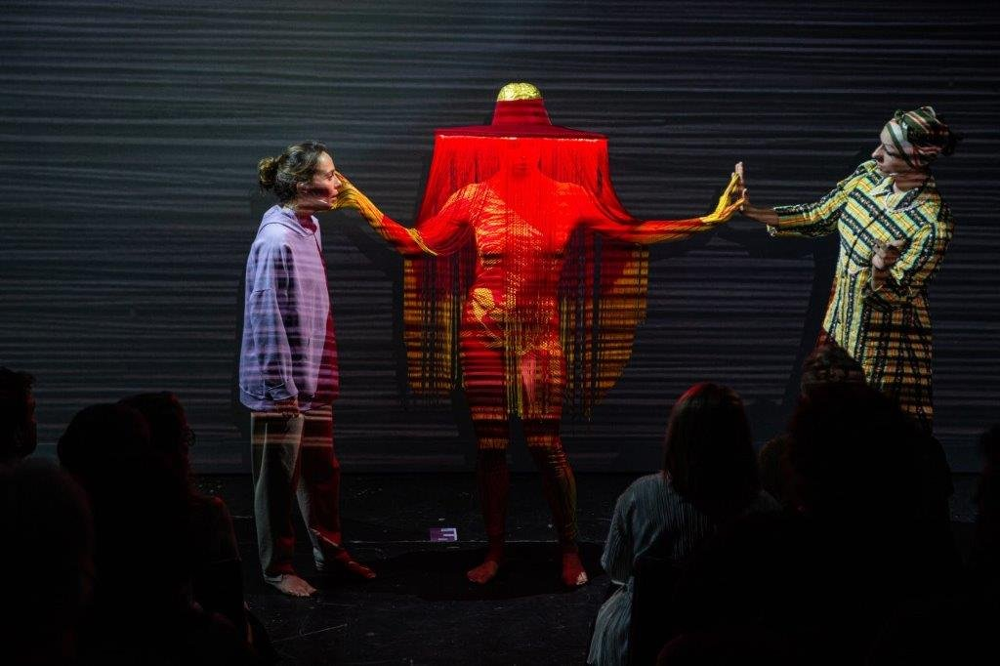
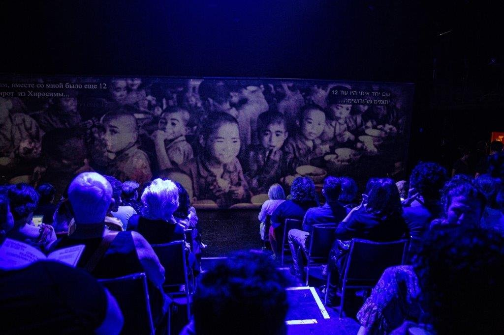
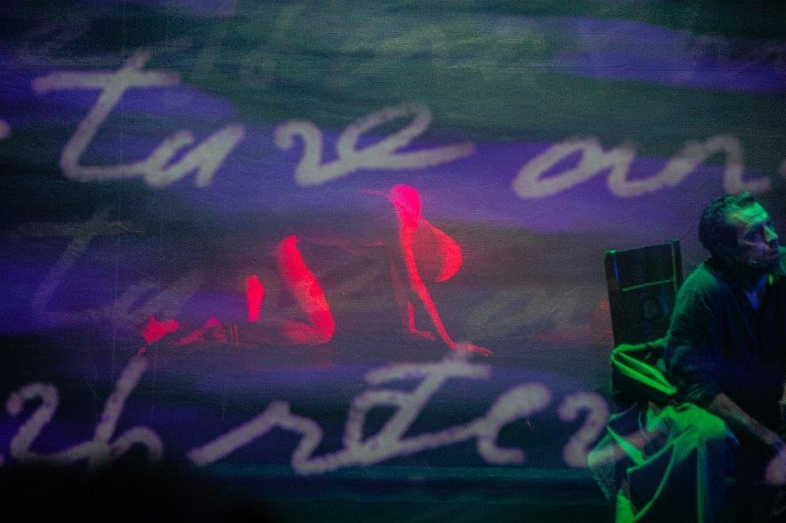
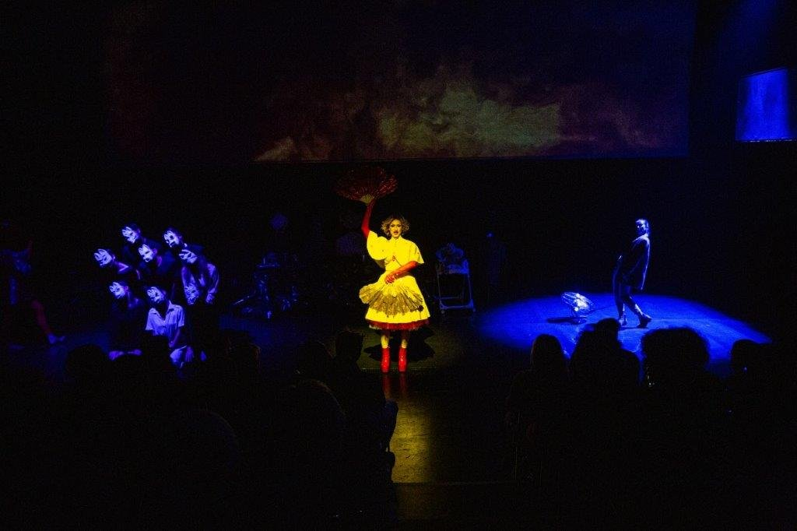
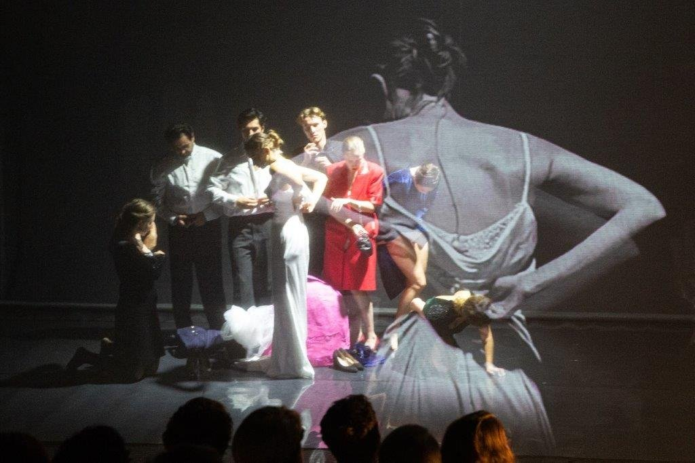
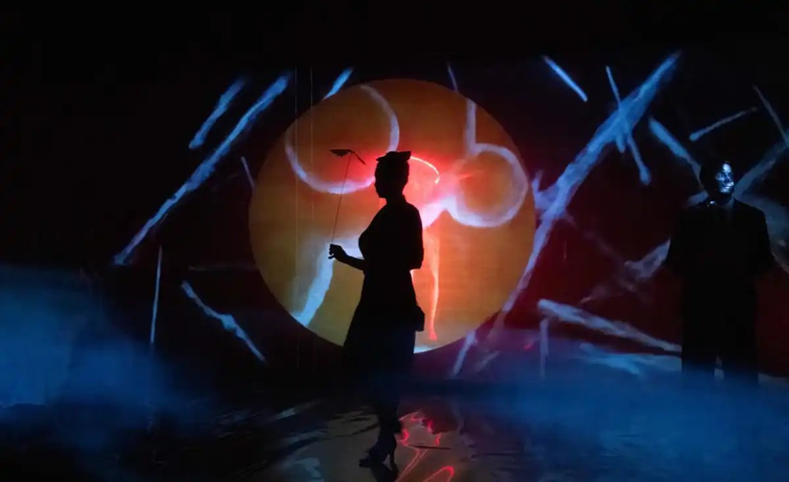

תקציר
דרמה דוקומנטרית־אמנותית בהשראת עדויות ההיבאקושה — ניצולי הפצצות האטום על הירושימה ונגסאקי. בעיירה קטנה המתכוננת לחתונה בזמן מלחמה מתנפץ חלום החגיגה במכה אחת, וההצגה נעה מהמרחב האגדתי אל עדות תיעודית חשופה. בלי לשחזר את ההיסטוריה כפשוטה, היא שואלת: האם האנושות מסוגלת להיעשות אנושית יותר בלי לעבור דרך מעשי הרס לא־אנושיים?
צוות
- בימוי: דריה שמינה
- אמן וידאו ופרסקאות AI: ניק דריידן
- הפקה: תיאטרון פולקרו בשיתוף תיאטרון גשר
- בכורה: 27 ביוני 2024, האנגר גשר, תל אביב
קונספט חזותי
דריידן הקדיש שנה שלמה לאימון רשת נוירונית ליצירת פרסקאות AI בהשראת הציור היפני שלאחר המלחמה ורישומי ארכיון. ההקרנות הפכו לעדים חיים על הבמה: לוחות דיגיטליים עצומים הנעים מנופים שלווים אל חורבות חרוכות. המולטימדיה לא ליוותה את הדרמה — היא הפכה ל"דמות" עצמאית; אחד הרגעים העזים היה הקרנת שמי ענן גרעיני קרוע, שהותירה את האולם בדממה מהדהדת.
גלריה








